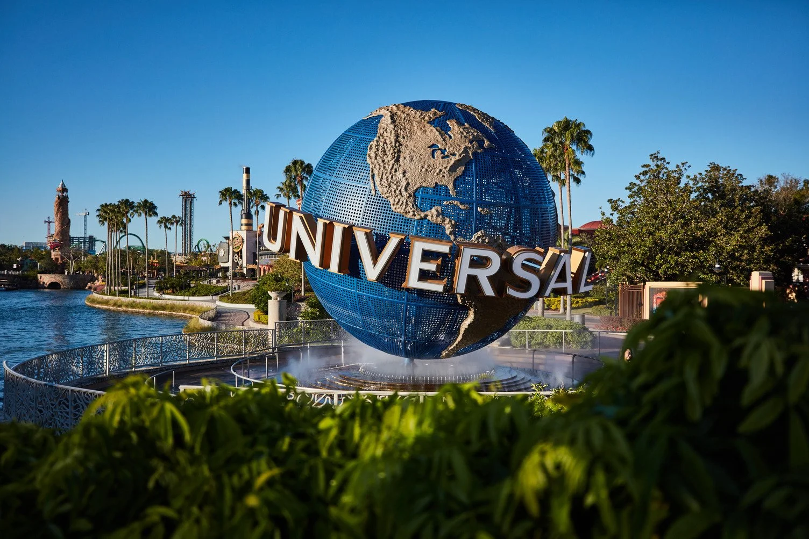
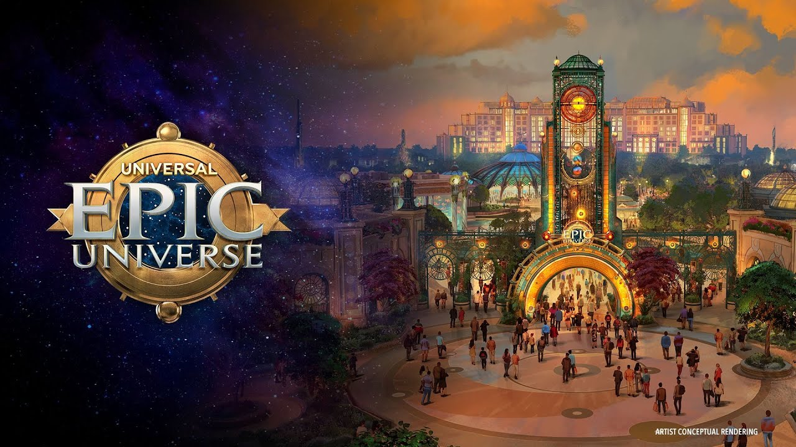
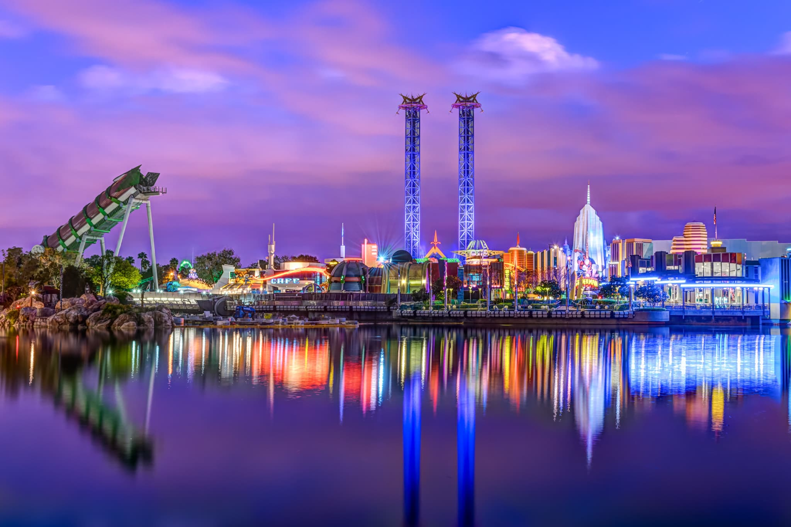
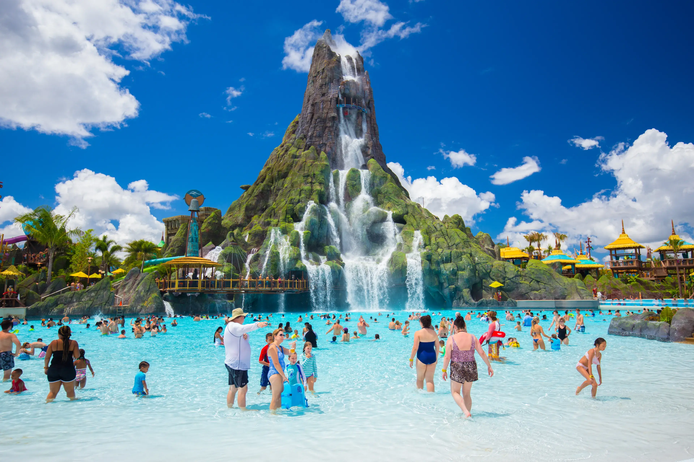

Películas, aventura y mundos inmersivosDescubre Universal

Oh Happy Trip
Universal: vive tus historias favoritas
Universal combina atracciones de gran formato, áreas inmersivas y entretenimiento inspirado en películas, videojuegos y personajes. Compara sus dos destinos principales en Estados Unidos: el extenso resort de Orlando y el parque con estudios de cine en Hollywood, California.
Florida · Universal Orlando Resort
Universal Orlando
Un destino de varios días con cuatro parques temáticos y una zona de restaurantes y entretenimiento. Algunas experiencias del Wizarding World of Harry Potter se conectan entre parques; revisa las condiciones del boleto si quieres visitar más de un parque en un mismo día.
Universal Studios Florida
Un parque donde las atracciones te colocan dentro de películas y programas. Encontrarás áreas temáticas, espectáculos, simuladores y atracciones familiares y de aventura; el ambiente cambia de las calles de Nueva York y San Francisco a mundos fantásticos.
Islands of Adventure
Un recorrido por islas temáticas con montañas rusas, atracciones acuáticas y aventuras para diferentes edades. Destacan Hogsmeade y el castillo de Hogwarts, Jurassic Park y Marvel Super Hero Island.
Universal Volcano Bay
Un parque acuático tropical con toboganes, ríos, una gran piscina de olas y zonas para relajarse. Es una alternativa para intercalar un día de agua y descanso; su operación y acceso dependen de la temporada y del boleto elegido.
Universal Epic Universe
El parque más nuevo de Orlando, organizado alrededor de Celestial Park y varios mundos inmersivos. Incluye áreas inspiradas en The Wizarding World of Harry Potter – Ministry of Magic, Super Nintendo World, How to Train Your Dragon – Isle of Berk y Dark Universe. La oferta de atracciones y horarios puede cambiar.
Para organizar Orlando: considera días suficientes para cada parque, transporte y alojamiento. Universal CityWalk ofrece restaurantes, tiendas y entretenimiento fuera de los parques; las entradas, pases Express y otros complementos se venden según condiciones y disponibilidad.
California · Universal Studios Hollywood
Universal California
Universal Studios Hollywood combina un parque temático con un estudio de producción en funcionamiento. Su ubicación en Los Ángeles hace posible sumar la visita a otros planes de la ciudad; por su tamaño y distribución, suele organizarse de manera distinta a una estancia de varios días en Orlando.
World-Famous Studio Tour
Un recorrido guiado en tranvía por sets y escenarios de producción. Es la experiencia distintiva del parque y permite conocer cómo se construyen algunos efectos y ambientes de cine y televisión. El recorrido y los sets disponibles pueden variar por producción.
Super Nintendo World
Una zona interactiva inspirada en el universo de Mario, con escenarios coloridos, actividades y atracciones temáticas. Algunas funciones pueden requerir una pulsera o compra adicional, por lo que conviene revisar las opciones vigentes antes de viajar.
The Wizarding World of Harry Potter
Explora Hogsmeade, sus tiendas y el castillo de Hogwarts. La ambientación, las atracciones y los detalles del pueblo convierten la visita en una parada para fans, además de ofrecer opciones para comer y descubrir productos temáticos.
Upper Lot y Lower Lot
El parque está distribuido en dos niveles conectados por escaleras eléctricas. Planear el recorrido entre ambos ayuda a aprovechar el día, especialmente si quieres combinar Studio Tour, atracciones populares, espectáculos y tiempos de comida.
La edad mínima, estatura, accesibilidad y otras restricciones dependen de cada atracción. Horarios, espectáculos, cierres por mantenimiento y opciones de acceso rápido pueden cambiar; revisa la información del parque para tus fechas.
Elige el viaje que te va mejor
Orlando o California
Elige Orlando si…
Quieres recorrer varios parques Universal, combinar días de atracciones y agua, conocer Epic Universe y alojarte dentro de un resort con múltiples opciones de entretenimiento.
Elige California si…
Quieres visitar Universal Studios Hollywood como parte de un viaje por Los Ángeles, conocer su Studio Tour y combinar el parque con otros sitios de la ciudad.